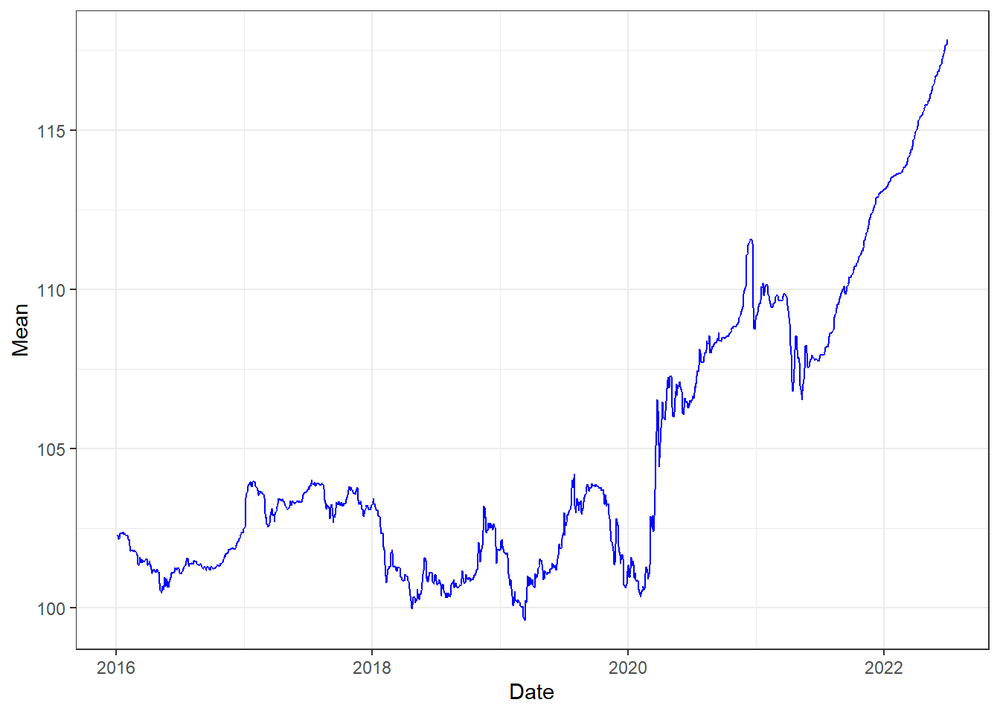
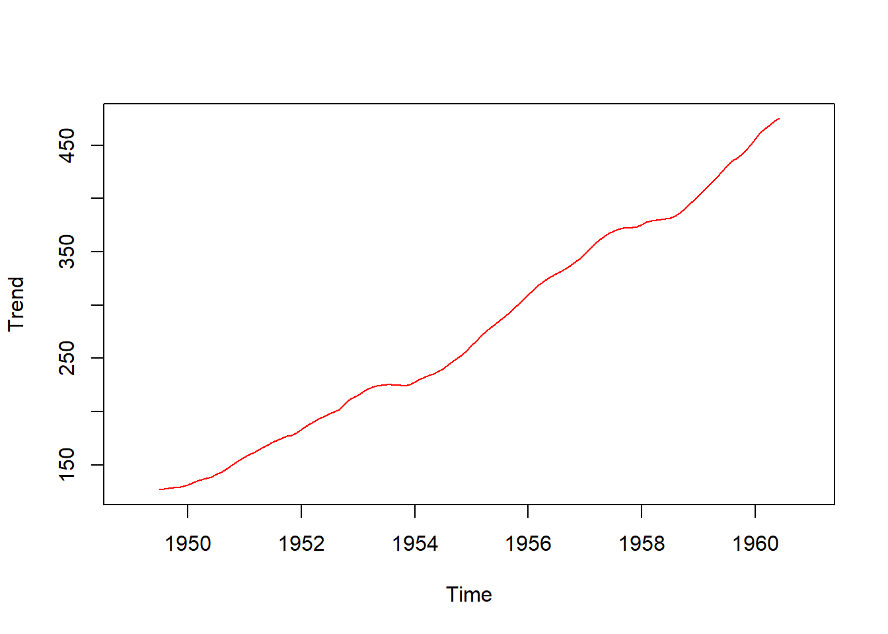
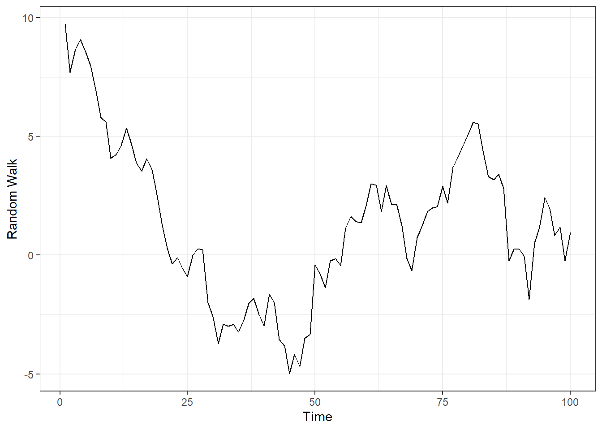

Chapter 2 STA 2203 Labwork
This section gives all the solutions to the lab work so far done in the period of lecture.
2.1 Labwork One
The first lab work was geared to enable the student to be able to plot a basic time series and be able to describe the data set. The packages used include dplyr, lubridate, rKenyaForex, ggplot2.
To install the above packages:
install.packages(c("dplyr","lubridate", "rKenyaForex", "ggplot2"))We used in build data called kenyaforex to do a visualization of the exchange of Kenya Shilling versus US Dollar.
# loading the packages
library(rKenyaForex)
library(dplyr)
library(lubridate)
library(ggplot2)
# loading the data
Kenya <- kenyaforex %>%
filter(Currency == "US DOLLAR")
# Convert to time series
Kenya$Date <- ymd(Kenya$Date)
# ploting
ggplot(Kenya, aes(x = Date, y = Mean)) + geom_line(col = "blue") + theme_bw()
2.1.1 Time Series Components
This section demonstrates how to do a visualization of the components of time series in R using the example of AirPassengers data inbuilt in R
Trend Component
# data
Dec <- decompose(AirPassengers)
# trend component
Trend <- Dec$trend
# plot
ts.plot(Trend, col = "red")
2.1.2 Simulating a Random Walk Process
A random walk process is given as:
\[Y_{t} = Y_{t-1} + e_{t}\]
The above process can be simulated as:
# simulating the random walk
RaW <- function(N, Y0, mean, sd)
{
# define error terms
e <- cumsum(rnorm(n = N, mean = 0, sd =sd))
# process
Y <- Y0 + e
# time
t <- 1:N
Results <- data.frame(t, Y)
return(Results)
}
# data
Data <- RaW(100,10,0,1)
# plot
library(ggplot2)
ggplot(Data, aes(x = t, y = Y)) + geom_line() + theme_bw() + labs(x = "Time", y = "Random Walk")
2.2 Labwork Two
2.2.1 Fitting a linear regression
This example uses the data given in class.
# reading in the data
t <- c(-4,-2,-1,0,1,2,5)
Xt <- c(67,88,94,85, 91, 98, 90)
# Model
Model <- lm(Xt ~ t)
# Model output
library(flextable)
as_flextable(Model)Estimate | Standard Error | t value | Pr(>|t|) | ||
|---|---|---|---|---|---|
(Intercept) | 87.258 | 3.183 | 27.415 | 0.0000 | *** |
t | 2.191 | 1.179 | 1.858 | 0.1223 |
|
Signif. codes: 0 <= '***' < 0.001 < '**' < 0.01 < '*' < 0.05 | |||||
Residual standard error: 8.409 on 5 degrees of freedom | |||||
Multiple R-squared: 0.4085, Adjusted R-squared: 0.2901 | |||||
F-statistic: 3.452 on 5 and 1 DF, p-value: 0.1223 | |||||
Though the fitted model is not significant it is used for demonstration purposes only.
The trend values are extracted as follows
t <- c(-4,-2,-1,0,1,2,5)
Xt <- c(67,88,94,85, 91, 98, 90)
Model <- lm(Xt ~ t)
# data
DataF <- data.frame(t, Xt)
DataF$Trend <- Model$fitted.values
knitr::kable(DataF)| t | Xt | Trend |
|---|---|---|
| -4 | 67 | 78.49438 |
| -2 | 88 | 82.87640 |
| -1 | 94 | 85.06742 |
| 0 | 85 | 87.25843 |
| 1 | 91 | 89.44944 |
| 2 | 98 | 91.64045 |
| 5 | 90 | 98.21348 |
2.2.2 Fitting an Exponential Curve
We demonstrated how to fit an exponential curve to data.
# data
Y <- c(25,25,27.9,31.9,36.1, 43.9,54.7)
t <- c(-3, -2, -1, 0, 1, 2, 3)
# Model
Model2 <- lm(log(Y) ~ t)
as_flextable(Model2)Estimate | Standard Error | t value | Pr(>|t|) | ||
|---|---|---|---|---|---|
(Intercept) | 3.514 | 0.029 | 122.922 | 0.0000 | *** |
t | 0.133 | 0.014 | 9.326 | 0.0002 | *** |
Signif. codes: 0 <= '***' < 0.001 < '**' < 0.01 < '*' < 0.05 | |||||
Residual standard error: 0.07564 on 5 degrees of freedom | |||||
Multiple R-squared: 0.9456, Adjusted R-squared: 0.9348 | |||||
F-statistic: 86.98 on 5 and 1 DF, p-value: 0.0002 | |||||
# exponentiating the coefficients
exp(Model2$coefficients)## (Intercept) t
## 33.587392 1.1426052.2.3 Moving Average in R
During the lecture we did Moving Average as a method of eliminating trend.
library(zoo)##
## Attaching package: 'zoo'## The following objects are masked from 'package:base':
##
## as.Date, as.Date.numerict <- c(1,2,3,4,5,6,7)
Obs <- c(3,4,5,6,7,8,9)
# 3 point MA
KD <- data.frame(t, Obs)
KD$MA3 <- rollmean(Obs, k = 3, fill = NA)
# 4 point MA
KD$MA4 <- rollmean(Obs, k = 4, fill = NA)
knitr::kable(KD)| t | Obs | MA3 | MA4 |
|---|---|---|---|
| 1 | 3 | NA | NA |
| 2 | 4 | 4 | 4.5 |
| 3 | 5 | 5 | 5.5 |
| 4 | 6 | 6 | 6.5 |
| 5 | 7 | 7 | 7.5 |
| 6 | 8 | 8 | NA |
| 7 | 9 | NA | NA |